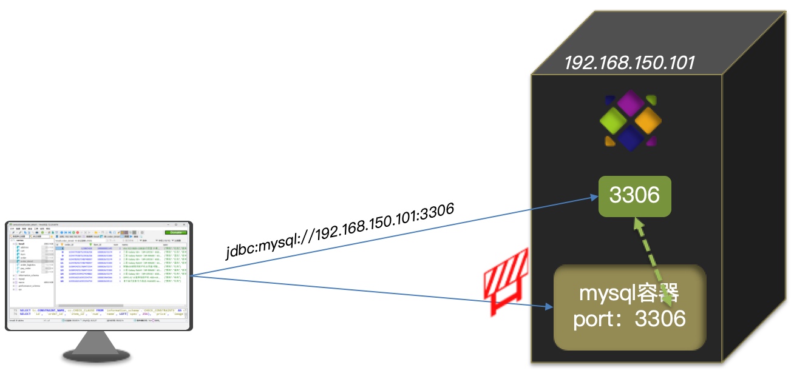
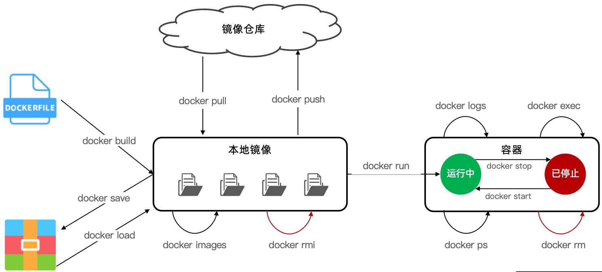
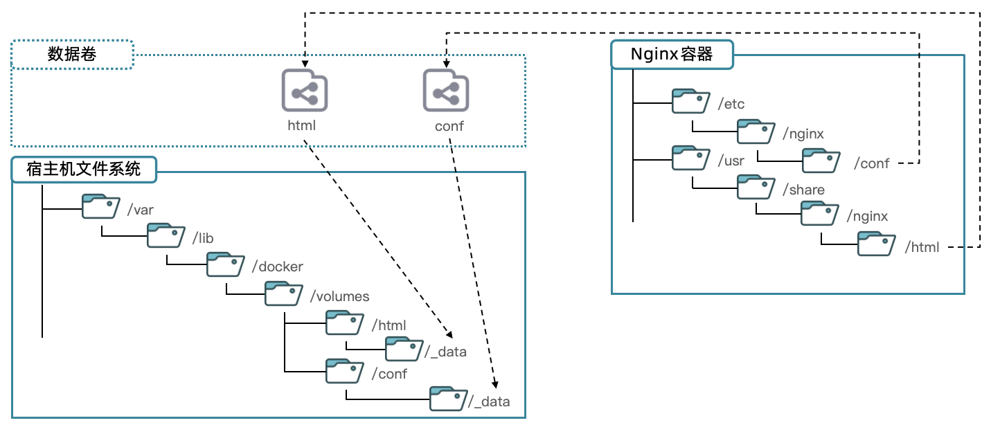
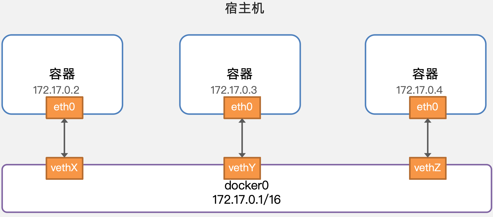

Docker 为什么出现
一次镜像，处处运行
在开发、测试和运维的工作中，总是会遇到各种环境问题，导致项目无法正常运行，阻碍工作进度。
通过 docker 的==容器虚拟化技术==，开发人员开发好之后，将程序和相关环境(mysql,jdk 等)打包成镜像，而测试和运维人员只需要拉去镜像即可。实现==镜像既应用==。这就实现了跨平台、跨服务器。只需要一次配置好环境，换到别的机子上就可以一键部署好，大大简化了操作。
所谓镜像可以理解为一个绿色免安装的包，下载下来就可以直接运行
下载与安装
下载：到docker 官网。对于 CentOS 的系统需要配置 yum，对于 Ubuntu 的需要配置 apt
CentOS
# 安装yum工具 yum install -y yum-utils #安装成功后，执行命令，配置Docker的yum源： yum-config-manager --add-repo https://download.docker.com/linux/centos/docker-ce.repo # 使用yum安装 yum install -y docker-ce docker-ce-cli containerd.io docker-buildx-plugin docker-compose-pluginUbuntu
# Add Docker's official GPG key: sudo apt-get update sudo apt-get install ca-certificates curl sudo install -m 0755 -d /etc/apt/keyrings sudo curl -fsSL https://download.docker.com/linux/ubuntu/gpg -o /etc/apt/keyrings/docker.asc sudo chmod a+r /etc/apt/keyrings/docker.asc # Add the repository to Apt sources: echo \ "deb [arch=$(dpkg --print-architecture) signed-by=/etc/apt/keyrings/docker.asc] https://download.docker.com/linux/ubuntu \ $(. /etc/os-release && echo "$VERSION_CODENAME") stable" | \ sudo tee /etc/apt/sources.list.d/docker.list > /dev/null sudo apt-get update # To install the latest version sudo apt-get install docker-ce docker-ce-cli containerd.io docker-buildx-plugin docker-compose-plugin # Verify that the Docker Engine installation is successful sudo docker run hello-world
配置 docker 的镜像：镜像可以在：登录阿里云–产品–容器–容器镜像服务–镜像加速器
# 创建目录
mkdir -p /etc/docker
# 复制内容，注意把其中的镜像加速地址改成你自己的
tee /etc/docker/daemon.json <<-'EOF'
{
"registry-mirrors": ["https://xxxx.mirror.aliyuncs.com"]
}
EOF
# 重新加载配置
systemctl daemon-reload
# 重启Docker
systemctl restart docker
快速入门
docker run -d \
--name mysql \
-p 3306:3306 \
-e TZ=Asia/Shanghai \
-e MYSQL_ROOT_PASSWORD=123 \
mysql:5.7
####################################
# docker run ：创建并运行一个容器，-d 是让容器在后台运行
# --name mysql ：给容器起个名字，必须唯一
# -p 3306:3306 ：设置端口映射
# -e KEY=VALUE ：是设置环境变量
# mysql:5.7 指定运行的镜像的名字
#######################################
# 镜像命名规范：[repository]:[tag]
### repository就是镜像名
### tag是镜像的版本
### 在没有指定tag时，默认是latest，代表最新版本的镜像
什么是端口映射
-p 宿主机端口(服务器的端口):容器内端口
容器是一个完全隔离的状态，无法从外部直接连接容器内部的 3306，也就是不能直接连接容器内部的 MySQL。
如果我们创建连个个 MySQL 的容器，就会发现连个映射关系：3307->3306和3306->3306
root@hcss-ecs-1b9f:~# docker ps
CONTAINER ID IMAGE COMMAND CREATED STATUS PORTS NAMES
3119c3ec4cbb mysql:5.7 "docker-entrypoint.s…" 9 seconds ago Up 7 seconds 33060/tcp, 0.0.0.0:3307->3306/tcp, :::3307->3306/tcp mysql2
7fb520c997ee mysql:5.7 "docker-entrypoint.s…" 2 hours ago Up 2 hours 0.0.0.0:3306->3306/tcp, :::3306->3306/tcp, 33060/tcp mysql
常见命令
docker inspect 容器名：查看容器详情，如数据卷的挂载等
一个 docker 使用的正常流程：下载 Nginx 镜像
去docker hub上查看 Nginx 的版本
下载最新的 Nginx 版本：
docker pull nginx查看是否下载成功：
docker images想把镜像保存到本地，使用
docker save,但不是后面的参数怎么写，使用docker save --help将镜像保存到本地：
docker save -o 1.tar nginx:latestroot@hcss-ecs-1b9f:~# docker save -o 1.tar nginx:latest root@hcss-ecs-1b9f:~# ll total 142588 drwx------ 7 root root 4096 Feb 29 12:17 ./ drwxr-xr-x 24 root root 4096 Feb 28 20:13 ../ -rw------- 1 root root 145902080 Feb 29 12:17 1.tar #这 drwx------ 3 root root 4096 Jan 12 13:45 .ansible/ -rw-r--r-- 1 root root 1459 Feb 28 22:25 .bash_history -rw-r--r-- 1 root root 3106 Oct 15 2021 .bashrc drwx------ 3 root root 4096 Jan 12 13:51 .cache/ -rw------- 1 root root 0 Jul 13 2023 .history -rwxr-xr-x 1 root root 15353 Jan 12 13:47 HSSInstall* -rw-r--r-- 1 root root 35331 Jan 4 17:21 install.sh drwxr-xr-x 2 root root 4096 Jan 12 13:51 .pip/ -rw-r--r-- 1 root root 161 Jul 9 2019 .profile drwx------ 3 root root 4096 Jan 12 13:43 snap/ drwx------ 2 root root 4096 Feb 26 22:46 .ssh/ -rw------- 1 root root 880 Feb 29 11:12 .viminfo -rw-r--r-- 1 root root 246 Jan 12 13:56 .wget-hsts -rw------- 1 root root 58 Jan 12 13:50 .Xauthority root@hcss-ecs-1b9f:~# pwd /root删除 NGINX 镜像
docker rmi nginx:latest加载本地镜像
docker load -i 1.tar -q- -i 1.tar：本地镜像的名字
- -q：加载的时候不会打印日志（quiet）
创建并运行一个 Nginx 容器：
docker run -d --name nginx -p 80:80 nginx:latest查看容器是否运行：
docker psroot@hcss-ecs-1b9f:~# docker ps CONTAINER ID IMAGE COMMAND CREATED STATUS PORTS NAMES f4a55fdafb94 nginx:latest "/docker-entrypoint.…" 10 seconds ago Up 9 seconds 0.0.0.0:80->80/tcp, :::80->80/tcp nginx 7fb520c997ee mysql:5.7 "docker-entrypoint.s…" About an hour ago Up About an hour 0.0.0.0:3306->3306/tcp, :::3306->3306/tcp, 33060/tcp mysql可以对输出的内容进行格式化：
docker ps --format "table {{.ID}}\t{{.Image}}\t{{.Ports}}\t{{.Status}}\t{{.Names}}"root@hcss-ecs-1b9f:~# docker ps --format "table {{.ID}}\t{{.Image}}\t{{.Ports}}\t{{.Status}}\t{{.Names}}" CONTAINER ID IMAGE PORTS STATUS NAMES f4a55fdafb94 nginx:latest 0.0.0.0:80->80/tcp, :::80->80/tcp Up 3 minutes nginx 7fb520c997ee mysql:5.7 0.0.0.0:3306->3306/tcp, :::3306->3306/tcp, 33060/tcp Up 2 hours mysql停掉 NGINX：
docker stop nginxroot@hcss-ecs-1b9f:~# docker stop nginx nginx root@hcss-ecs-1b9f:~# docker ps --format "table {{.ID}}\t{{.Image}}\t{{.Status}}\t{{.Names}}" CONTAINER ID IMAGE STATUS NAMES 7fb520c997ee mysql:5.7 Up 2 hours mysql如果我们想查看所有容器
docker ps --format "xxxx" -aroot@hcss-ecs-1b9f:~# docker ps --format "table {{.ID}}\t{{.Image}}\t{{.Status}}\t{{.Names}}" -a CONTAINER ID IMAGE STATUS NAMES f4a55fdafb94 nginx:latest Exited (0) 3 minutes ago nginx 0d59c7149c7d mysql:5.7 Exited (1) 14 minutes ago mysql2 7fb520c997ee mysql:5.7 Up 2 hours mysql再次启动 NGINX：
docker start nginxroot@hcss-ecs-1b9f:~# docker start nginx nginx root@hcss-ecs-1b9f:~# docker ps --format "table {{.ID}}\t{{.Image}}\t{{.Status}}\t{{.Names}}" CONTAINER ID IMAGE STATUS NAMES f4a55fdafb94 nginx:latest Up 17 seconds nginx 7fb520c997ee mysql:5.7 Up 2 hours mysql查看 NGINX 的运行日志：
docker logs nginxroot@hcss-ecs-1b9f:~# docker logs nginx /docker-entrypoint.sh: /docker-entrypoint.d/ is not empty, will attempt to perform configuration ...... /docker-entrypoint.sh: Configuration complete; ready for start up 2024/02/29 05:00:47 [notice] 1#1: using the "epoll" event method ...... 2024/02/29 05:12:22 [notice] 1#1: start worker process 25 root@hcss-ecs-1b9f:~#查看 Nginx 的日志：持续输出：
docker logs -f nginx。停止：ctl+c进入容器内部：
docker execroot@hcss-ecs-1b9f:~# docker exec --help Usage: docker exec [OPTIONS] CONTAINER COMMAND [ARG...] Execute a command in a running container Aliases: docker container exec, docker exec Options: -d, --detach Detached mode: run command in the background --detach-keys string Override the key sequence for detaching a container -e, --env list Set environment variables --env-file list Read in a file of environment variables -i, --interactive Keep STDIN open even if not attached --privileged Give extended privileges to the command -t, --tty Allocate a pseudo-TTY -u, --user string Username or UID (format: "<name|uid>[:<group|gid>]") -w, --workdir string Working directory inside the container在 Linux 中，
STDIN是标准的输入流，通常对应终端的键盘如果对 Linux 的 TTY 比较熟悉的话，对于这个选项就比较了解了。我们可以把它理解为 Linux 的终端程序，所以
-t选项就可以理解为为容器分配一个伪 tty 终端并绑定到容器的标准输入上，之后用户就可以通过终端来控制容器了。一般
-t都是与-i一起出现的，也就是-it。具体课参考这篇博客。
root@hcss-ecs-1b9f:~# docker exec -it nginx bash root@f4a55fdafb94:/#进入
nginx这个容器，使用bash的命令行格式。执行完之后：
root@hcss-ecs-1b9f变为root@f4a55fdafb94。说明已经进入到容器内部。而f4a55fdafb94这串数字是 Nginx 的容器 ID容器内部模拟了一个真实的文件系统（linux）
root@f4a55fdafb94:/# ls bin dev docker-entrypoint.sh home lib64 mnt proc run srv tmp var boot docker-entrypoint.d etc lib media opt root sbin sys usr root@f4a55fdafb94:/#退出容器：
exitroot@f4a55fdafb94:/# exit exit root@hcss-ecs-1b9f:~#也可以在容器中直接使用对应程序，以 mysql 为例
root@hcss-ecs-1b9f:~# docker exec -it mysql bash root@7fb520c997ee:/# mysql -uroot -p Enter password: ## 数据库的密码是在下载mysql的时候配置环境（-e）的时候设置的 Welcome to the MySQL monitor. Commands end with ; or \g. Your MySQL connection id is 5 Server version: 5.7.36 MySQL Community Server (GPL) Copyright (c) 2000, 2021, Oracle and/or its affiliates. Oracle is a registered trademark of Oracle Corporation and/or its affiliates. Other names may be trademarks of their respective owners. Type 'help;' or '\h' for help. Type '\c' to clear the current input statement. mysql> show databases; +--------------------+ | Database | +--------------------+ | information_schema | | mysql | | performance_schema | | sys | +--------------------+ 4 rows in set (0.00 sec) mysql> exit Bye root@7fb520c997ee:/# exit exit root@hcss-ecs-1b9f:~#删除容器：
先停掉容器
docker stop nginx，再删除docker rm nginxroot@hcss-ecs-1b9f:~# docker rm nginx Error response from daemon: cannot remove container "/nginx": container is running: stop the container before removing or force remove root@hcss-ecs-1b9f:~# docker stop nginx nginx root@hcss-ecs-1b9f:~# docker rm nginx nginx root@hcss-ecs-1b9f:~#强制删除
docker rm mysql2 -froot@hcss-ecs-1b9f:~# docker rm mysql2 Error response from daemon: cannot remove container "/mysql2": container is running: stop the container before removing or force remove root@hcss-ecs-1b9f:~# docker rm mysql2 -f mysql2
别名：简化命令。需要在
~/.bashrc这个文件下面配置，配置之后需要启用配置文件source ~/.bashrc# 编辑配置文件 root@hcss-ecs-1b9f:~# vim ~/.bashrc alias dpsf1='docker ps --format "table {{.ID}}\t{{.Image}}\t{{.Ports}}\t{{.Status}}\t{{.Names}}"' alias dpsf1a='docker ps --format "table {{.ID}}\t{{.Image}}\t{{.Ports}}\t{{.Status}}\t{{.Names}}" -a' alias dpsf2='docker ps --format "table {{.ID}}\t{{.Image}}\t{{.Status}}\t{{.Names}}"' alias dpsf2a='docker ps --format "table {{.ID}}\t{{.Image}}\t{{.Status}}\t{{.Names}}" -a' # 启用配置文件 root@hcss-ecs-1b9f:~# source ~/.bashrc root@hcss-ecs-1b9f:~# dpsf2 CONTAINER ID IMAGE STATUS NAMES 7fb520c997ee mysql:5.7 Up 3 hours mysql
数据的挂载
为什么
root@hcss-ecs-1b9f:~# docker exec -it nginx bash
root@d9d0d3603b32:/# cd /usr/share/nginx/html
root@d9d0d3603b32:/usr/share/nginx/html# ls
50x.html index.html
root@d9d0d3603b32:/usr/share/nginx/html# vi index.html
bash: vi: command not found
我们希望修改 nginx 的静态资源，但是进入到容器内部，发现没有 vi 命令。这是因为容器只配置了应用运行的最小运行资源。许多类似 vi 的命令都没有，使得修改和上次文件显得特别困难。这个时候我们就需要利用数据卷来挂载。
数据卷
挂载的原理
数据卷（volume）是一个虚拟目录，是容器内目录与宿主机目录之间映射的桥梁。
如何挂载
在创建容器时只需要执行如下命令：
docker run -d --name nginx -p80:80 -v 数据卷名字:容器内目录 nginx
# 数据卷的挂载只能在创建容器时挂载，所有需要先删掉容器
root@hcss-ecs-1b9f:~# docker rm -f nginx
nginx
#在执行docker run命令时，使用 -v 数据卷:容器内目录 可以完成数据卷挂载
root@hcss-ecs-1b9f:~# docker run -d --name nginx -p80:80 -v html:/usr/share/nginx/html nginx
82538b0c5ea99d79b330e8fc5661e8919ef3e7f0b2fd32b50e07a8c1fc089a1d
# 查看所有数据卷
root@hcss-ecs-1b9f:~# docker volume ls
DRIVER VOLUME NAME
local a505a328c817d28f3cfff9def729f0fe463323df23261eb494461b2fdc65cda5
local html
# 查看某个数据卷的详情
root@hcss-ecs-1b9f:~# docker volume inspect html
[
{
"CreatedAt": "2024-03-06T11:36:47+08:00",
"Driver": "local",
"Labels": null,
"Mountpoint": "/var/lib/docker/volumes/html/_data",
"Name": "html",
"Options": null,
"Scope": "local"
}
]
最终实现的效果是：宿主机/var/lib/docker/volumes/html/_data 和容器/usr/share/nginx/html 两个目录下各有一份文件
数据卷的操作
docker volume create：创建数据卷
docker volume ls：查看所有数据卷
docker volume rm：删除指定数据卷
docker volume inspect：查看某个数据卷的详情
docker volume prune：清除数据卷
本地目录挂载
如果我们在创建容器的时候没有指定数据卷的挂载，docker 会自动创建一个匿名卷
root@hcss-ecs-1b9f:~# docker volume ls
DRIVER VOLUME NAME
local a505a328c817d28f3cfff9def729f0fe463323df23261eb494461b2fdc65cda5
local html
挂载信息如下：
root@hcss-ecs-1b9f:~# docker inspect mysql
"Mounts": [
{
"Type": "volume",
"Name": "a505a328c8...fdc65cda5",
"Source": "/var/lib/docker/volumes/a505a328c817...dc65cda5/_data",
"Destination": "/var/lib/mysql",
"Driver": "local",
"Mode": "",
"RW": true,
"Propagation": ""
}
],
挂载的是容器内的/var/lib/mysql目录。这个目录是 mysql 的数据存储目录。
为什么 mysql 要把他的数据存储目录挂载到宿主机呢？因为如果不挂载，容器的体积越来越大，未来容器迁移会很麻烦，为了数据的解耦，这个做法是有必要的
为什么不能用匿名卷：
- 如果容器升级后需要删除容器，当我们新建容器的时候，再采用匿名卷的方式，就没有产生数据的迁移
- 名字太长，今天的许多操作都不方便
新方式：挂载到任意目录下
案例：基于宿主机目录实现 MySQL 数据目录、配置文件、初始化脚本的挂载（不知道目录在哪，可以查阅官方镜像文档）
- 挂载/root/mysql/data 到容器内的/var/lib/mysql 目录
- 挂载/root/mysql/init 到容器内的/docker-entrypoint-initdb.d 目录，携带课前资料准备的 SQL 脚本
- 挂载/root/mysql/conf 到容器内的/etc/mysql/conf.d 目录，携带课前资料准备的配置文件
在执行 docker run 命令时，使用 -v 本地目录 : 容器内目录 可以完成本地目录挂载
本地目录必须以“/”或 “./“ 开头，如果直接以名称开头，会被识别为数据卷而非本地目录
- -v mysql : /var/lib/mysql 会被识别为一个数据卷叫 mysql
- -v ./mysql : /var/lib/mysql 会被识别为当前目录下的 mysql 目录
在宿主机创建目录之后，再执行以下命令
docker run -d \
--name mysql \
-p 3306:3306 \
-e TZ=Asia/Shanghai \
-e MYSQL_ROOT_PASSWORD=123 \
-v /root/mysql/data:/var/lib/mysql \
-v /root/mysql/init:/docker-entrypoint-initdb.d \
-v /root/mysql/conf:/etc/mysql/conf.d \
mysql:5.7
执行的时候遇到的问题：
首先，自己之前下载的不是最新版本的，是 mysql5.7 的，导致在执行/root/mysql/init 中的初始化脚本的时候，遇到了错误。conf 中的配置文件执行了，但是 sql 脚本没有执行
于是我下载最新版本的，把原来 5.7 的镜像卸载掉。结果运行 docker run 之后没有启动。查看日志报了一下错误：
Upgrade after a crash is not supported. This redo log was created with MySQL 5.7.36. Please follow the instructions at http://dev.mysql.com/doc/refman/8.0/en/upgrading.html原因是上一次 docker run 的时候，data 文件夹里面已经生成了一些数据。是个 5.7 版本相关的。这样就和我最新版本的镜像相冲突。
自定义镜像与 dockerfile
以上都是下载别人制作好的镜像，但是如果我们要项目部署的时候，我们也要报项目打包，制成镜像。
镜像就是包含了应用程序、程序运行的系统函数库、运行配置等文件的文件包。构建镜像的过程其实就是把上述文件打包的过程。
构建一个 Java 镜像的步骤：
- 准备一个 Linux 运行环境
- 安装 JRE 并配置环境变量
- 拷贝 Jar 包
- 编写运行脚本
镜像的结构：

这样分层打包的好处：
可以共享一些基础的层。比如对于所有的 Ubuntu 的操作系统，我们都需要构建 Ubantu 的基础镜像，我们需要把一些基础的函数库挑出来，这是一个非常费时费力的操作。可如果我们挑出来之后，打包成镜像，上传到公共仓库，这样下次就不需要再挑选函数了。
与此同时，下载速度也会大大提升。因为 docker 在下载镜像的时候，会先检查本地是否存在同样的镜像，如果有，就不会下载
root@hcss-ecs-1b9f:~# docker pull redis Using default tag: latest latest: Pulling from library/redis a2abf6c4d29d: Already exists ## 这句就在检查本地仓库 c7a4e4382001: Pull complete 4044b9ba67c9: Pull complete c8388a79482f: Pull complete 413c8bb60be2: Pull complete 1abfd3011519: Pull complete Digest: sha256:db485f2e245b5b3329fdc7eff4eb00f913e09d8feb9ca720788059fdc2ed8339 Status: Downloaded newer image for redis:latest docker.io/library/redis:latest root@hcss-ecs-1b9f:~#
Dockerfile
Dockerfile 就是一个文本文件，其中包含一个个的指令(Instruction)，用指令来说明要执行什么操作来构建镜像。将来 Docker 可以根据 Dockerfile 帮我们构建镜像。常见指令如下：
| 指令 | 说明 | 示例 |
|---|---|---|
| FROM | 指定基础镜像 | FROM centos:6 |
| ENV | 设置环境变量，可在后面指令使用 | ENV key value |
| COPY | 拷贝本地文件到镜像的指定目录：这些目录未必存在，但是只要写了，将来 docker 在创建镜像的时候会创建这个目录，然后把指定词镜像放在这个目录里面 | COPY ./jre11.tar.gz /tmp |
| RUN | 执行 Linux 的 shell 命令，一般是安装过程的命令。 | RUN tar -zxvf /tmp/jre11.tar.gz&& EXPORTS path=/tmp/jre11:$path |
| EXPOSE | 指定容器运行时监听的端口，是给镜像使用者看的 | EXPOSE 8080 |
| ENTRYPOINT | 镜像中应用的启动命令，容器运行时调用 | ENTRYPOINT java -jar xx.jar |
例如，要基于 Ubuntu 镜像来构建一个 Java 应用，其 Dockerfile 内容如下：
# 指定基础镜像
FROM ubuntu:16.04
# 配置环境变量，JDK的安装目录、容器内时区
ENV JAVA_DIR=/usr/local
ENV TZ=Asia/Shanghai
# 拷贝jdk和java项目的包
COPY ./jdk8.tar.gz $JAVA_DIR/
COPY ./docker-demo.jar /tmp/app.jar
# 设定时区
RUN ln -snf /usr/share/zoneinfo/$TZ /etc/localtime && echo $TZ > /etc/timezone
# 安装JDK：因为COPY过来的是压缩报，需要解压安装
RUN cd $JAVA_DIR \
&& tar -xf ./jdk8.tar.gz \
&& mv ./jdk1.8.0_144 ./java8
# 配置环境变量
ENV JAVA_HOME=$JAVA_DIR/java8
ENV PATH=$PATH:$JAVA_HOME/bin
# 指定项目监听的端口
EXPOSE 8080
# 入口，java项目的启动命令
ENTRYPOINT ["java", "-jar", "/app.jar"]
上述步骤很多，但是主语都是与 jdk 镜像相关的步骤，于是有人把 jdk+系统环境结合在一起，制作了一个基础镜像，如 openjdk:11.0-jre-buster。这样作就大大简化了配置。
# 基础镜像
FROM openjdk:11.0-jre-buster
# 设定时区
ENV TZ=Asia/Shanghai
RUN ln -snf /usr/share/zoneinfo/$TZ /etc/localtime && echo $TZ > /etc/timezone
# 拷贝jar包
COPY docker-demo.jar /app.jar
# 入口
ENTRYPOINT ["java", "-jar", "/app.jar"]
构建镜像
root@hcss-ecs-1b9f:~/demo# docker build -t docker-demo .
docker build：就是构建一个 docker 镜像-t docker-demo：给惊喜取名 docker-demo。格式依然是**repository:tag**的格式，不指定 tag 时，默认为 latest。如果我想指定版本就可以写：-t docker-demo:1.0.：最后的点是指构建时 Dockerfile 所在路径，也就是告诉 docker 去哪里找 dockerfile 文件（告诉 docker 怎么构建）。由于我们进入了 demo 目录，所以指定的是.代表当前目录，也可以直接指定 Dockerfile 目录：# 直接指定Dockerfile目录 docker build -t docker-demo:1.0 /root/demo对于运行
docker build -t docker-demo .这个命令，也必须在 dockerfile 对应的文件夹下，否则回报如下错误：ERROR: failed to solve: failed to read dockerfile: open Dockerfile: no such file or directorydockerfile 文件要和 docker-demo.jar 在一起，因为我们拷贝 jar 包的时候使用的是相对路径
# 拷贝jar包 COPY docker-demo.jar /app.jardemo 里面的文件：
root@hcss-ecs-1b9f:~/demo# ll total 17292 drwxr-xr-x 2 root root 4096 Mar 6 17:49 ./ drwx------ 9 root root 4096 Mar 6 17:45 ../ -rw-r--r-- 1 root root 17692387 Mar 6 17:51 docker-demo.jar -rw-r--r-- 1 root root 260 Mar 6 17:49 Dockerfile另外也必须叫
Dockerfile。因为我们的指令（docker build -t docker-demo:1.0 /root/demo）没有指定文件名/app.jar这个路径是容器内的路径：root@hcss-ecs-1b9f:~/demo# docker exec -it dd bash root@887dee3ce049:/# ls app.jar bin boot dev etc home lib lib64 media mnt opt proc root run sbin srv sys tmp usr var
docker run -d --name dd -p 8080:8080 docker-demo
应用制定的是 8080
可以用docker logs dd查看日志，看看是否启动
网络
默认情况下，所有容器都是以 bridge 方式连接到 Docker 的一个虚拟网桥上。图中的/16表示前 16 位不能动，每一段最大数是 255（2^8^），也就是前两段不能动。
所有虽然个个容器是独立空间，但是可以同网桥相互访问。
但是因为 IP 地址是网桥自动分配的，不是固定 IP，不固定与某一个容器绑定。如果我们在开发时写死某个 IP，而在部署时很可能 MySQL 容器的 IP 会发生变化，连接会失败。
我们需要创建一个自定义的网络。一旦创建自定义的网络，就会形成新的网桥，生成新的网段。加入这个自定义网络的容器，就可以相互连接。加入自定义网络的容器还可以通过容器名互相访问，这样就不需要知道对方的 IP 地址，Docker 的网络操作命令如下：
| 命令 | 说明 | 文档地址 |
|---|---|---|
| docker network create | 创建一个网络 | docker network create |
| docker network ls | 查看所有网络 | docs.docker.com |
| docker network rm | 删除指定网络 | docs.docker.com |
| docker network prune | 清除未使用的网络 | docs.docker.com |
| docker network connect | 使指定容器连接加入某网络 | docs.docker.com |
| docker network disconnect | 使指定容器连接离开某网络 | docker network disconnect |
| docker network inspect | 查看网络详细信息 | docker network inspect |
# 创建一个网络
root@hcss-ecs-1b9f:~# docker network create test
6bb868db1b7acdd42d4eb0d80c7ee8a1d5f44c7047484644f1fb14de3ebeaa62
# 查看所有网络
root@hcss-ecs-1b9f:~# docker network ls
NETWORK ID NAME DRIVER SCOPE
944bbb7fa383 bridge bridge local
614dfc283894 host host local
7850dabd07e4 none null local
6bb868db1b7a test bridge local
# 使指定容器连接加入某网络 docker network connect [OPTIONS] NETWORK CONTAINER
root@hcss-ecs-1b9f:~# docker network connect test mysql
root@hcss-ecs-1b9f:~# docker inspect mysql
# 查看mysql的网络：有两个了bridge和test
root@hcss-ecs-1b9f:~# docker inspect mysql
"Networks": {
"bridge": { ####notice#####
"IPAMConfig": null,
"Links": null,
"Aliases": null,
"MacAddress": "02:42:ac:11:00:02",
"NetworkID": "944bbb7fa383025fd566712c925ff09e676233ef6beb41b28b485e6c2e4d87cf",
"EndpointID": "35beba36e7644ff9ad340cbb5820c1f8695382c9cb2f5e895c39610507fa5301",
"Gateway": "172.17.0.1",
"IPAddress": "172.17.0.2",
"IPPrefixLen": 16,
"IPv6Gateway": "",
"GlobalIPv6Address": "",
"GlobalIPv6PrefixLen": 0,
"DriverOpts": null,
"DNSNames": null
},
"test": { ####notice#####
"IPAMConfig": {},
"Links": null,
"Aliases": [
"cf3d698e83e6"
],
"MacAddress": "02:42:ac:12:00:02",
"NetworkID": "6bb868db1b7acdd42d4eb0d80c7ee8a1d5f44c7047484644f1fb14de3ebeaa62",
"EndpointID": "0d8c91c4d270b4a1cfe9041dd3ef756d0622d0d9addc886747f445326d2f809a",
"Gateway": "172.18.0.1",
"IPAddress": "172.18.0.2",
"IPPrefixLen": 16,
"IPv6Gateway": "",
"GlobalIPv6Address": "",
"GlobalIPv6PrefixLen": 0,
"DriverOpts": {},
"DNSNames": [
"mysql",
"cf3d698e83e6"
]
}
}
# 创建容器的时候连接
root@hcss-ecs-1b9f:~# docker run -d --name dd -p 8080:8080 --network test docker-demo
99100c6381c8917cba470469b2645231ce2b00bed76ab34eac84ab016b0132cc
# dd 里面没有默认的bridge网桥
root@hcss-ecs-1b9f:~# docker inspect dd
"Networks": {
"test":
转载请注明来源，欢迎对文章中的引用来源进行考证，欢迎指出任何有错误或不够清晰的表达。可以在下面评论区评论，也可以邮件至 1909773034@qq.com